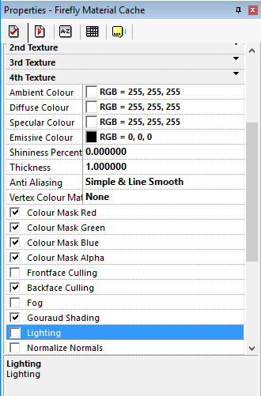
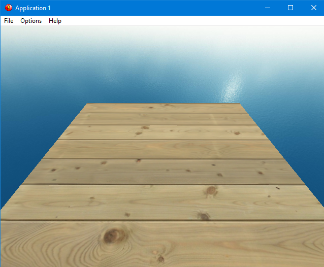
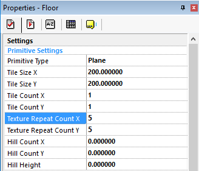
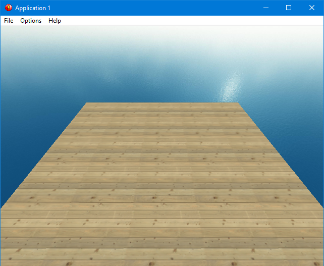
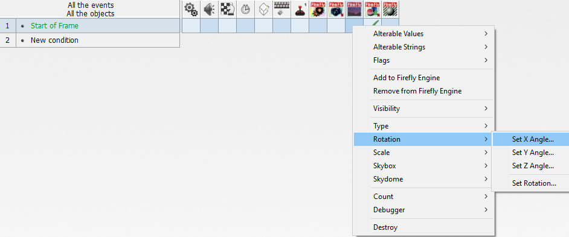
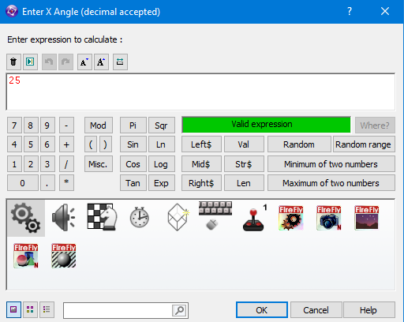
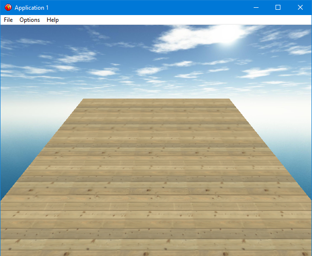

|
We've added our floor, we've added a material in a cache and applied that material to our floor but still its black, whats going on? how good is your memory ? do you remember something you read way back in step 3 ? you did read step 3 didnt you ? i'll put it again here just incase. |
|||||
|
|||||
| Any Material (from the Material Cache object) that has its 'Lighting' setting set to true/on (which it is by default) means that it requires light to be rendered in some colour other than black. well that looks like our solution, lets go back to the material cache and turn off the lighting setting. |
|||||
|  | |||||
| OK, that should be the problem solved, lets hit Run Frame, and see what it looks like now. | |||||
|  | |||||
| OK, finally we have a floor but wow those floor boards look massive, i think we need smaller ones, luckily for us you can repeat texture on a model by changing the tiled settings, click on the floor and then look at its Properties and you can see Texture Repeat Count X and Texture Repeat Count Y set them both to 5 | |||||
|  | |||||
| From now on I wont be telling you to hit Run Frame anymore as i'm sure you know how to do that now so and lets see what our floor looks like now. | |||||
|  | |||||
| Perfect, you know what the missing clouds from the skybox is annoying me now, as you have now learnt how to use the grid system lets add a new action for the skybox. | |||||
|  | |||||
| Just like before right mouse the Skybox column on the start Frame line and choose Rotation and then Set X Angle | |||||
|  | |||||
| The question this time is Enter X Angle type 25 and hit OK | |||||
|  | |||||
| Perfect.... now we finally have a decent start to our chocobreak 3D world. | |||||